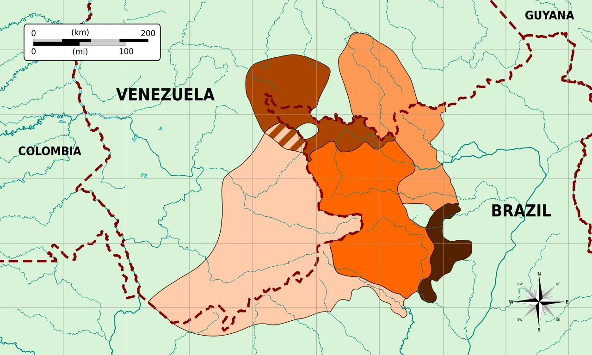
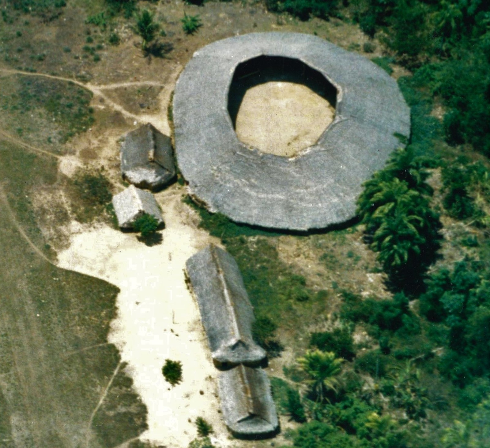
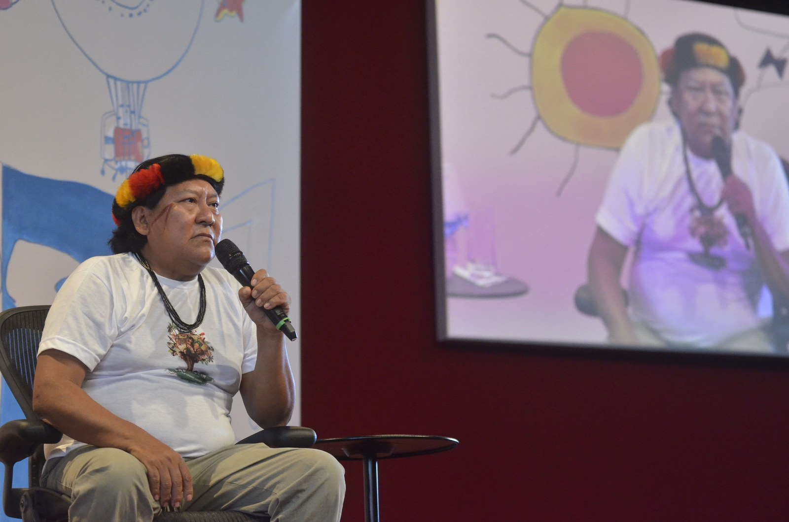

Povos indígenas • Amazônia • cosmologia • tradição oral
Mitologia Yanomami
A floresta, os espíritos e a possibilidade da queda do céu.
Para os povos Yanomami, narrativas de origem, espíritos, sonhos e xamanismo não pertencem apenas a um passado remoto. Elas participam de relações atuais entre pessoas, floresta, animais, território, doença, memória e vida coletiva.1
Quem são os Yanomami?
Os Yanomami vivem em uma ampla região de floresta e montanhas entre o norte do Brasil e o sul da Venezuela. No Brasil, a Terra Indígena Yanomami abrange áreas de Roraima e Amazonas e é compartilhada também com os Ye’kwana.23
“Yanomami” também não descreve uma única língua: há diferentes línguas da família Yanomami e diferentes comunidades com histórias e variações próprias.4


Um mundo onde floresta, pessoas e espíritos permanecem relacionados
Em descrições Yanomami registradas por Davi Kopenawa e por pesquisas etnográficas, urihi — a terra-floresta — não é apenas cenário físico ou estoque de recursos. Ela participa de relações cosmológicas entre humanos e não humanos.15
O diagrama resume relações descritas em fontes específicas; não é um “mapa oficial” ou universal da cosmologia Yanomami.
Seres, relações e conhecimentos fundamentais
Criação • ordem • conhecimento
Omama
Figura central em importantes narrativas Yanomami de origem. Em relatos de Davi Kopenawa, Omama aparece ligado à formação dos humanos e à criação dos xapiri para proteger a vida.1
Morte • desordem • transformação
Yoasi
Nas narrativas registradas por Kopenawa e Albert, Yoasi aparece associado à introdução da morte e de males no mundo humano. O significado deve ser lido dentro da narrativa Yanomami específica, não como personagem de um panteão universal.
Espíritos • imagens • proteção
Xapiri
Os xapiripë ocupam posição central no xamanismo Yanomami. São descritos como imagens/espíritos que os xamãs aprendem a ver e chamar, participando de relações de cura, proteção e manutenção do mundo.6
Floresta • território • vida
Urihi
Urihi costuma ser traduzida como “terra-floresta”, mas a tradução “natureza” é insuficiente. As fontes a descrevem como realidade viva e relacional, com dimensões materiais, sociais e cosmológicas.1
Conhecimento • cura • mediação
Xamãs
Especialistas xamânicos estabelecem relações com os xapiri e atuam em processos de cura, diagnóstico, proteção e conhecimento. As práticas e formas de aprendizagem variam entre comunidades.
Experiência • memória • deslocamento
Sonhos
Determinados sonhos podem participar de formas Yanomami de conhecimento e experiência. Reduzi-los a “imaginação durante o sono” perde o contexto cultural; tratá-los como prova objetiva de mundos espirituais ultrapassa o que a ciência pode demonstrar.
A possibilidade da queda do céu
Em narrativas apresentadas por Davi Kopenawa, um céu anterior caiu e o céu atual permanece sustentado por uma ordem que pode ser ameaçada. Em A Queda do Céu, essa cosmologia se entrelaça à crítica da mineração, das epidemias e da destruição da floresta.7
O que aconteceu com os Yanomami?
A história recente não pode ser separada de epidemias, abertura de frentes de ocupação, garimpo, violência e mobilização pela proteção territorial.
Transmissão própria
Conhecimentos, narrativas e práticas circulavam sobretudo por redes Yanomami de parentesco, ritual e oralidade.
Contatos mais intensos
Missões, agentes governamentais, frentes de ocupação e outros grupos ampliam o contato em várias regiões.
Estradas e pressões territoriais
Projetos de ocupação e exploração econômica aumentam deslocamentos, epidemias e conflitos.
Expansão do garimpo
A invasão garimpeira provoca grave crise sanitária e territorial, documentada por organizações indígenas, pesquisadores e órgãos públicos.8
Homologação da Terra Indígena Yanomami
O decreto de 25 de maio de 1992 homologou a demarcação administrativa da Terra Indígena Yanomami, com mais de 9,6 milhões de hectares.3
Massacre de Haximu
Garimpeiros atacaram Yanomami na região de Haximu. O caso tornou-se marco jurídico brasileiro pelo reconhecimento do crime de genocídio.9
Resistência e crise contínuas
Invasões, garimpo, contaminação, desassistência e pressão ambiental continuam exigindo ações de proteção, fiscalização e fortalecimento das organizações Yanomami.10
Dois modos de falar sobre a floresta
A comparação abaixo ajuda a visualizar diferenças de ênfase, mas não presume que “sociedade ocidental” ou “Yanomami” sejam blocos homogêneos.
| Leitura econômica convencional | Cosmologia Yanomami em fontes específicas |
|---|---|
| Floresta como recurso | Terra-floresta como mundo vivo e relacional |
| Minério como riqueza extraível | Montanhas e subsolo participam da ordem do mundo |
| Natureza separada do humano | Humanos pertencem a redes de relações da floresta |
| Animais como fauna/recurso | Animais podem participar de relações cosmológicas |
| Conhecimento validado prioritariamente por ciência | Conhecimento também transmitido por experiência, tradição, sonhos e xamanismo |
O que essas narrativas ajudam a pensar?
Interdependência
A vida aparece inserida em relações que ultrapassam o indivíduo.
Responsabilidade
Ações humanas podem afetar floresta, saúde, comunidade e ordem cosmológica.
Memória
Conhecimentos transmitidos entre gerações preservam história e identidade.
Limites
Capacidade de explorar um território não equivale, por si só, a legitimidade para destruí-lo.

Davi Kopenawa
Davi Kopenawa é xamã, pensador e liderança Yanomami. Sua obra permite aproximar cosmologia, história de vida, contato com os napë — os não Yanomami/brancos, em contextos específicos —, crítica ao garimpo e defesa da floresta.11
A Queda do Céu, construída em colaboração com o antropólogo Bruce Albert ao longo de décadas, é simultaneamente testemunho autobiográfico, exposição de conhecimento xamânico e crítica histórica à expansão predatória sobre o território Yanomami.7
O que ler?
Essencial
A Queda do Céu
Davi Kopenawa e Bruce Albert
Para compreender cosmologia, xamanismo, contato, epidemias, garimpo, floresta e crítica Yanomami à sociedade dos brancos.
Aprofundamento
O Espírito da Floresta
Davi Kopenawa e Bruce Albert
Reflexões e diálogos produzidos entre 2000 e 2020 sobre saber xamânico, biodiversidade, imagens, sons e destruição da floresta.12
Acadêmico
Etnografias e antropologia
Pesquisas sobre imagem, xamanismo, pessoa, território, história do contato e relações entre humanos e não humanos ajudam a comparar fontes e compreender variações entre comunidades.13
Uma cosmologia também é uma forma de pensar o presente
Outras formas de conhecimento
Permite observar que sociedades diferentes organizam humanidade, território, espiritualidade e experiência de modos distintos.
História brasileira
O contato e a expansão econômica podem ser analisados também a partir da experiência dos povos atingidos.
Questões ambientais
A noção de terra-floresta oferece outra linguagem para pensar território, mineração e destruição.
Combate a estereótipos
Yanomami aparecem como sociedades contemporâneas com produção intelectual, política e cultural própria.
Diversidade cultural
Línguas, narrativas e sistemas de conhecimento fazem parte do patrimônio intelectual humano.
O que sabemos — e o que não devemos afirmar
Bem documentado
- diversidade de línguas e comunidades Yanomami;
- centralidade de urihi em formulações cosmológicas registradas;
- papel dos xapiri no xamanismo Yanomami;
- narrativas sobre Omama e a queda do céu em fontes específicas;
- história recente do contato, garimpo e demarcação territorial;
- produção intelectual de Davi Kopenawa.
Exige cautela
- afirmar que todas as comunidades contam exatamente as mesmas narrativas;
- traduzir Omama como equivalente direto de um “Deus” ocidental;
- chamar xapiri simplesmente de “fantasmas”;
- tratar uma versão etnográfica como doutrina universal;
- separar cosmologia do contexto histórico e territorial em que ela é vivida.
Tradição / metafísica
A existência objetiva dos xapiri, a ação espiritual dos xamãs e a estrutura metafísica descrita pelas narrativas pertencem à tradição religiosa e filosófica Yanomami. A antropologia pode documentar essas concepções; isso não constitui comprovação científica de entidades espirituais.
Fontes e metodologia
Prioridade editorial: vozes Yanomami e organizações indígenas → documentação oficial → etnografia e pesquisa acadêmica → fontes visuais contextualizadas.
1 ISA — Yanomami: Kami Yamaki Urihipë, Nossa Terra-Floresta
Tipo: documentação socioambiental com extensa base etnográfica e Yanomami.
Fonte para urihi, xapiri, localização, história e formulações de Davi Kopenawa.
Abrir fonte2 Casa Civil — Terra Indígena Yanomami
Tipo: informação oficial contemporânea.
Contexto territorial e populacional da TI Yanomami.
Abrir fonte3 Decreto de 25 de maio de 1992 — homologação da TI Yanomami
Tipo: documento jurídico primário.
Homologação da demarcação administrativa da Terra Indígena Yanomami.
Abrir decreto4 Mapa das línguas Yanomami
Tipo: cartografia linguística de referência.
Mapa público usado apenas como apoio visual para diversidade linguística.
Abrir Wikimedia Commons5 SciELO — Urihinari a, o espírito da floresta
Tipo: artigo acadêmico, 2024.
Discute terra-floresta, ecologia e formulações de Kopenawa e Albert.
Abrir artigo6 SciELO — o conceito Yanomami de imagem e os xapiri
7 Davi Kopenawa e Bruce Albert — A Queda do Céu
Tipo: voz Yanomami em colaboração etnográfica.
Fonte central para cosmologia, história de vida, xamanismo, crítica ao garimpo e queda do céu.
Ver edição brasileira8 FUNAI — contexto territorial e crise sanitária Yanomami
Tipo: documentação oficial.
Fonte para demarcação, território e efeitos históricos do garimpo.
Abrir fonte9 Supremo Tribunal Federal — Massacre de Haximu
Tipo: documentação judicial.
Contexto do massacre de 1993 e enquadramento como genocídio.
Abrir registro10 Governo Federal — ações contra garimpo na TI Yanomami
Tipo: documentação oficial contemporânea.
Registra a escala recente da mineração irregular e operações de retirada e fiscalização.
Abrir fonte11 Hutukara Associação Yanomami — História dos Yanomami
Tipo: organização indígena.
Reúne textos e referências Yanomami sobre terra-floresta, história e Davi Kopenawa.
Abrir PDF12 Davi Kopenawa e Bruce Albert — O Espírito da Floresta
Tipo: voz Yanomami em colaboração etnográfica.
Reflexões sobre biodiversidade, conhecimento xamânico e destruição da floresta.
Ver edição brasileira13 Pesquisa antropológica sobre Yanomami, imagem e cosmopolítica
Tipo: literatura acadêmica.
Usada para contextualizar relações entre pessoa, imagem, xamanismo, território e conhecimento.
Abrir artigo14 Mapa das línguas Yanomami — SyntaxTerror
Licença: domínio público.
Renderização local derivada do arquivo Yanomaman.svg.
Abrir Wikimedia Commons15 Davi Kopenawa na FLIP — Fernando Frazão/Agência Brasil
Data: 2014. Licença: CC BY 3.0 BR.
Abrir Wikimedia Commons16 Vista aérea de shabono Yanomami — Cmacauley
Local/contexto: norte do Brasil, fevereiro de 2001. Licença: CC BY-SA 4.0.
Abrir Wikimedia CommonsA floresta não é cenário: é parte da pergunta
Uma página sobre cosmologia Yanomami perde seu sentido se reduzir Omama, xapiri e a queda do céu a uma lista de “lendas”. O que as fontes mostram é um sistema vivo de conhecimento em que floresta, história, experiência, espiritualidade e sobrevivência continuam entrelaçadas — e no qual a destruição territorial não é apenas um problema econômico ou ambiental, mas uma ameaça ao próprio mundo de relações que torna a vida possível.